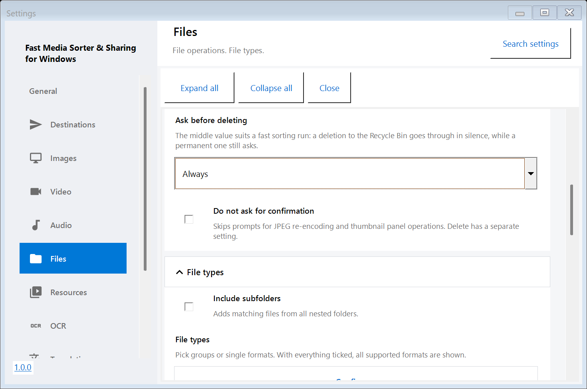

Main navigationОсновная навигацияОсновна навігаціяHOW TO · SETUP
Set it up once: default viewer, language, and what happens to your filesНастройте один раз: просмотрщик по умолчанию, язык и что происходит с файламиНалаштуйте один раз: переглядач за замовчуванням, мову та те, що відбувається з вашими файлами
Everything below lives behind F2. The defaults are safe out of the box, so treat this as the list of things worth deciding for yourself rather than a setup you must complete. This page describes the settings window of the 64-bit viewer (Windows 10 1607+); the 32-bit fallback has a plainer window of five tabs without most of the pages and groups named here.Всё, что ниже, находится за клавишей F2. По умолчанию всё настроено безопасно, поэтому считайте это списком того, что стоит решить для себя, а не обязательной настройкой. Страница описывает окно настроек 64-битного просмотрщика (Windows 10 1607+); в 32-битной резервной сборке окно проще, из пяти вкладок, и большинства названных здесь страниц и групп в нём нет.Усе, що нижче, міститься за клавішею F2. Типові значення безпечні з коробки, тож вважайте це переліком того, що варто вирішити самостійно, а не налаштуванням, яке обов'язково треба виконати. Сторінка описує вікно налаштувань 64-бітного переглядача (Windows 10 1607+); у 32-бітній резервній збірці вікно простіше, з п'яти вкладок, і більшості названих тут сторінок і груп у ньому немає.
Find a setting and return to itНайдите настройку и возвращайтесь к нейЗнайдіть налаштування й повертайтеся до нього
Groups open independently. Settings remember the last page, group states and approximate scroll position. Use Search settings or Ctrl+F to search names, explanations and choices; a result opens the original field. Expand all and Collapse all affect this page. Closing the window keeps applied changes. Search is temporary and excludes API keys and personal history. Profile import/export is in General / Advanced settings; window context stays on this PC.Группы раскрываются независимо. Настройки помнят последнюю страницу, состояния групп и примерную позицию прокрутки. Поиск настроек или Ctrl+F ищет названия, пояснения и варианты значений; результат открывает исходное поле. Развернуть все и Свернуть все действуют на эту страницу. Закрытие сохраняет применённые изменения. Поиск временный, ключи API и личная история в него не попадают. Импорт и экспорт профиля находятся в Общие / Дополнительные настройки; контекст окна остаётся на этом компьютере.Групи розкриваються незалежно. Налаштування запам'ятовують останню сторінку, стани груп і приблизну позицію прокручування. Скористайтеся Пошуком налаштувань або Ctrl+F, щоб шукати назви, пояснення та варіанти вибору; результат відкриває початкове поле. Розгорнути всі і Згорнути всі діють на цю сторінку. Закриття вікна зберігає застосовані зміни. Пошук тимчасовий і не охоплює ключі API та особисту історію. Імпорт/експорт профілю - у Загальні / Додаткові налаштування; контекст вікна лишається на цьому ПК.
Storage owns cache budgets and cleanup. Thumbnail size offers 96, 128, 192 or 256 px. Interface scale multiplies the Windows scale for settings, floating panels and text view. General offers a reset of additional preferences after confirmation and a backup; destinations, language, theme, sound, OCR and personal history are retained.Хранилище содержит лимиты кэшей и их очистку. Размер миниатюр: 96, 128, 192 или 256 px. Масштаб интерфейса умножает масштаб Windows для настроек, плавающих панелей и текстового просмотра. В Общих есть сброс дополнительных настроек с подтверждением и резервной копией; получатели, язык, тема, звук, OCR и личная история сохраняются.Сховище відповідає за ліміти кешів і їх очищення. Розмір мініатюр - 96, 128, 192 або 256 px. Масштаб інтерфейсу множить масштаб Windows для налаштувань, плавучих панелей і текстового перегляду. У Загальних є скидання додаткових уподобань після підтвердження та резервна копія; теки-отримувачі, мова, тема, звук, OCR і особиста історія зберігаються.
Make it your default viewerСделайте программой по умолчаниюЗробіть його переглядачем за замовчуванням
On the Files page, in the Keys and associations group, Image file types claims the picture types the program can display, and Video file types does the same for the video and audio it can play. Both write to your own user profile - no administrator rights are involved - and Windows may still ask you to confirm the choice in its own default-apps screen the first time you double-click a file.На странице Файлы, в группе Клавиши и ассоциации, кнопка Форматы изображений закрепляет за программой те типы картинок, которые она умеет показывать, а Форматы видео - видео и звук, которые она умеет проигрывать. Обе пишут в ваш собственный профиль пользователя, права администратора не нужны, - а Windows может дополнительно попросить подтвердить выбор в своих параметрах приложений при первом двойном щелчке по файлу.На сторінці Файли, у групі Клавіші та асоціації, кнопка Формати зображень закріплює за програмою типи зображень, які вона вміє показувати, а Формати відео робить те саме для відео та звуку, які вона вміє відтворювати. Обидві пишуть у ваш власний профіль користувача - права адміністратора не потрібні - і Windows усе одно може попросити підтвердити вибір на власному екрані програм за замовчуванням під час першого подвійного клацання по файлу.

The Files page: file operations and task groups. Language and theme are in General.Страница «Файлы»: операции с файлами и тематические группы. Язык и тема находятся в «Общих».Сторінка Файли: операції з файлами та групи завдань. Мова й тема - у розділі «Загальні».
Choose the interface languageВыберите язык интерфейсаВиберіть мову інтерфейсу
Thirteen languages ship with the 64-bit viewer (the 32-bit fallback has Russian and English only). On the very first run it follows your Windows display language, and after that your own choice wins: the two-letter button on the toolbar switches it instantly, and the same setting sits in General / Basic settings. Arabic and Urdu lay the window out right-to-left; Hindi, Bengali and Chinese switch to a font that can draw their script.В 64-битном просмотрщике тринадцать языков (в 32-битной резервной сборке - только русский и английский). При самом первом запуске она следует языку интерфейса Windows, а дальше решает ваш выбор: двухбуквенная кнопка на панели переключает язык мгновенно, та же настройка есть в Общие / Основные настройки. Арабский и урду разворачивают окно справа налево; хинди, бенгальский и китайский переключаются на шрифт, умеющий рисовать их письмо.У 64-бітному переглядачі тринадцять мов (у 32-бітній резервній збірці - лише російська й англійська). Під час найпершого запуску вона слідує мові інтерфейсу Windows, а далі перемагає ваш власний вибір: двобуквена кнопка на панелі перемикає мову миттєво, і те саме налаштування є в Загальні / Основні налаштування. Арабська та урду розташовують вікно справа наліво; гінді, бенгальська та китайська перемикаються на шрифт, здатний намалювати їхнє письмо.
Decide what happens to a fileРешите, что происходит с файломВирішіть, що відбувається з файлом
The Files / Basic settings group is the part worth reading before a big sorting session:Группа Файлы / Основные настройки - то, что стоит прочитать перед большим разбором:Група Файли / Основні налаштування - та частина, яку варто прочитати перед великою сесією сортування:
Name collision - ask, skip, keep both, or replace, when the destination folder already holds a file with that name.Совпадение имён - спрашивать, пропустить, сохранить оба или заменить, когда в папке-получателе уже есть файл с таким именем.Збіг імен - запитати, пропустити, зберегти обидва або замінити, коли в теці-отримувачі вже є файл із таким іменем.
After copying or moving - go to the next file, stay on the current one, or close when nothing is left.После копирования или перемещения - следующий файл, остаться на текущем или закрыть, когда файлов не осталось.Після копіювання або переміщення - перейти до наступного файлу, залишитися на поточному або закрити, коли нічого не лишилося.
Delete to the Recycle Bin and Ask before deleting - always, never, or only when the file will not reach the bin. A network share and a memory stick have no bin at all, and that is exactly when the question is worth asking.Удалять в Корзину и Спрашивать перед удалением - всегда, никогда или только если файл не попадёт в Корзину. У сетевой папки и флешки Корзины нет вовсе, и именно тогда вопрос и нужен.Видаляти до Кошика і Питати перед видаленням - завжди, ніколи або лише тоді, коли файл не потрапить до кошика. У мережевої теки та флешки кошика немає взагалі, і саме тоді це запитання варто ставити.
Narrow down what you seeСузьте то, что показываетсяЗвузьте те, що ви бачите
File types limits the list to the formats you actually care about, and Include subfolders decides whether a folder means its own files or everything beneath it. Open at startup (General / Startup) chooses what a plain launch shows - the start page, the last folder, or the last file. Right under it, Resume the last file goes further than the row above: it reopens the exact file that was on screen - not the position it held in the folder - and lets a video carry on from where it was left. It is off until you switch it on, and a file that has been deleted, renamed or left on a disconnected drive simply leaves the window empty. History sizes for recent files and folders are right there too, with a button that clears them.Пункт Типы файлов ограничивает список теми форматами, которые вам действительно нужны, а Просматривать вложенные папки решает, означает ли папка только свои файлы или всё, что лежит внутри неё. При запуске открывать (Общие / Запуск) выбирает, что показывает обычный запуск: стартовую страницу, последнюю папку или последний файл. Прямо под ним пункт Продолжать с последнего файла делает больше, чем строка выше: он открывает именно тот файл, который был на экране, - а не его номер в папке, - и даёт видео продолжиться с той позиции, где его оставили. По умолчанию выключен, а если файл удалён, переименован или лежит на отключённом диске, окно просто остаётся пустым. Размеры истории недавних файлов и папок - там же, вместе с кнопкой их очистки.Типи файлів обмежують список форматами, які вас справді цікавлять, а Переглядати вкладені теки вирішує, чи означає тека лише власні файли, чи все, що лежить під нею. Під час запуску відкривати (Загальні / Запуск) обирає, що показує звичайний запуск - стартову сторінку, останню теку чи останній файл. Одразу під цим пунктом Продовжувати з останнього файлу іде далі, ніж рядок вище: він повторно відкриває саме той файл, що був на екрані, - а не позицію, яку той посідав у теці, - і дає відео продовжитися з місця, де його залишили. Він вимкнений, доки ви його не ввімкнете, а файл, який видалено, перейменовано або залишено на відключеному диску, просто лишає вікно порожнім. Розміри історії останніх файлів і тек теж тут, разом із кнопкою, що їх очищає.
Carry the setup to another PCПеренесите настройки на другой компьютерПеренесіть налаштування на інший ПК
Export additional settings writes the additional preferences to a file and Import additional settings reads them back. Recipients, language, theme, sound and OCR are excluded. Include personal data decides whether your folder history and viewing positions travel with it; API keys and passwords never do, with or without that tick.Экспорт дополнительных настроек сохраняет дополнительные параметры в файл, Импорт дополнительных настроек читает их обратно. Получатели, язык, тема, звук и OCR не включаются. Флажок Включить личные данные решает, поедут ли с ним история папок и позиции просмотра; ключи API и пароли не попадают туда никогда, с флажком или без.Експорт додаткових налаштувань записує додаткові уподобання у файл, а Імпорт додаткових налаштувань зчитує їх назад. Отримувачі, мова, тема, звук і OCR не включаються. Включити особисті дані вирішує, чи поїде разом із ними історія тек і позиції перегляду; ключі API та паролі не їдуть ніколи - із цим прапорцем чи без нього.
Comfort of viewingКомфорт просмотраКомфорт перегляду
The General / Appearance group carries interface scale and Reduce motion; Images / Basic settings chooses the starting scale for each image. If the window feels too small or the effects too lively on your monitor, that is where to look first.В группе Общие / Оформление находятся масштаб интерфейса и Уменьшать анимацию; Изображения / Основные настройки задаёт масштаб нового изображения. Если окно кажется мелким, а эффекты - слишком бойкими для вашего монитора, начинать надо оттуда.Група Загальні / Оформлення містить масштаб інтерфейсу та Зменшувати анімацію; Зображення / Основні налаштування обирає початковий масштаб для кожного зображення. Якщо вікно здається замалим або ефекти надто жвавими на вашому моніторі, дивитися варто насамперед там.
If something goes wrongЕсли что-то пошло не такЯкщо щось пішло не так
F2 → About → Send the logs to the author packs the logs and a report of your version, Windows and settings into an archive, shows you what went in, and opens a new mail with it attached. Nothing is sent until you press Send yourself. The log sender is in the 64-bit viewer only (Windows 10 1607+); the 32-bit fallback does not have it.F2 → О программе → Отправить логи автору соберёт журналы и отчёт о версии, Windows и настройках в архив, покажет, что туда попало, и откроет письмо с вложением. Ничего не уходит, пока вы сами не нажмёте «Отправить». Отправка логов есть только в 64-битном просмотрщике (Windows 10 1607+); в 32-битной резервной сборке её нет.F2 → Про програму → Надіслати журнали автору пакує журнали та звіт про вашу версію, Windows і налаштування в архів, показує, що туди потрапило, і відкриває новий лист із ним у вкладенні. Нічого не надсилається, доки ви самі не натиснете «Надіслати». Надсилання журналів є лише в 64-бітному переглядачі (Windows 10 1607+); у 32-бітній резервній збірці його немає.